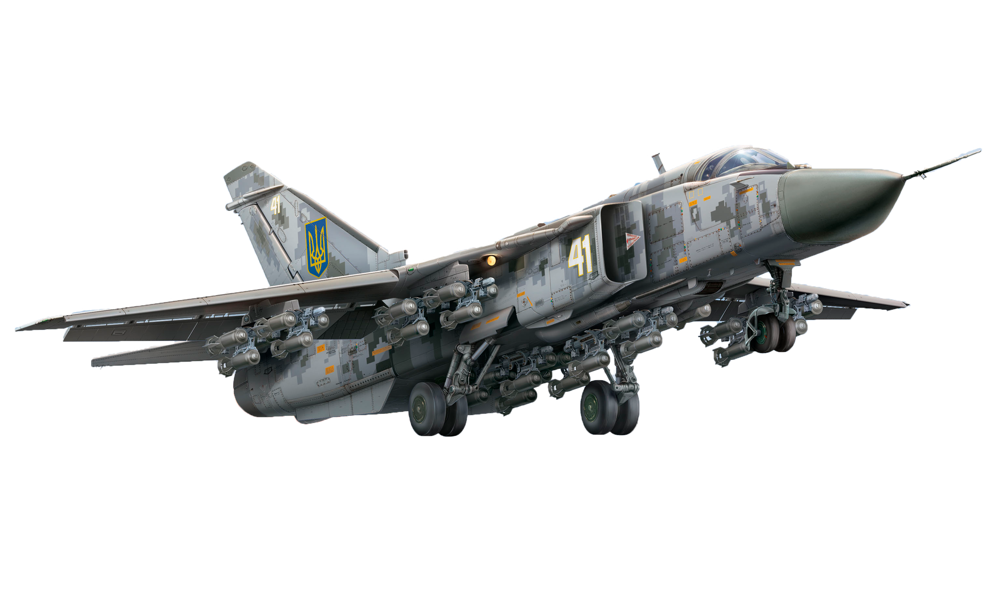

Лабораторна робота №3
Андрус Владислав ПП-25
Су-24 — радянський надзвуковий фронтовий бомбардувальник з крилом змінної стрілоподібності. Розробка почалася на початку 1960-х, у 1972 році був прийнятий на озброєння ВПС СРСР. Випущено близько 1200 літаків в різних модифікаціях